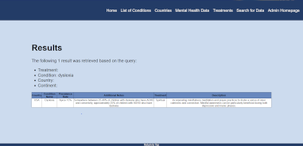

UPDATE: June 20, 2024
This site will remain active as an archive but will not be my primary portfolio as of June 20, 2024. Please go to https://dennisdao.servehttp.com for my updated portfolio.
Projects
Art Portfolio


May 2024 - June 2024
As part of a personal project to create a portfolio to display the artwork I have done with visual arts hobbies since May 2019. Styles range from digital to traditional acrylics.
The portfolio uses a CRUD system to manage this artwork for me efficiently and allow me to display and manage data 50% more efficiently than my initial file folder system approach.
Created with HTML, CSS, JavaScript, React, an Express REST API, Bootstrap, and PostgreSQL
Employee Wiki

Mar. 2024 - May 2024
As part of a personal project to create a typical human resource information system. Admins can manage the whole application, HR can enter in employee information and payroll, while regular users can view and change their information.
The system also has features such as dumping the database every 24 hours (and application startup) for backups and a component to create a root user on first start up.
Created with Java using the SpringBoot framework with a JPA database, MVC pattern, HTML, CSS, and JavaScript
Meeting Room Simulator


Feb. 2024 - Ongoing
As part of a personal project to implement randomly generated concepts into an office meeting room concept.
The game allows you to play as a meeting attendee to ensure that your company's meetings go well. Players must manage their time, resources, and their own person's resources wisely while ensuring the meetings go well. Otherwise, their job will be on the line.
Created on Unity 3D using C# scripting and database management with NoSQL and MongoDB
ON HIATUS
Mock Game Forum Site
Jan. 2024 - Feb. 2024
A mock game forum site where users can view and contribute to discussions about games while administrators can manage data and user permissions on the site.
Additonally, it allows admins to create data of games played and keep track of ratings and genres played overtime as an archive.
Created with HTML, CSS, JavaScript, Node.js, Express, and MongoDB

The Western Trail

Jan. 2023 - Dec. 2023
As part of self-initiated capstone project to showcase project management concepts and further game development skills.
The game allows you to play up to four different save files, playing as the leader of a team of four people surviving from Montreal to Vancouver in a fictional post-apocalyptic scenario. Players will have to manage their resources while travelling and resting and defend themselves from the mutants that wander the land. Demo presented Nov. 2023.
Created on Unity 3D using C# scripting and database management with SQL and SQLite.

Personal Portfolio

Sept. 2023 - Feb. 2024
A web portfolio to display my projects, skills, and a bio about me to potential employers and viewers.
This will be continuously updated as time permits.
Created with HTML, CSS, and JavaScript.

Mental Health Database Application
Sept. 2023 - Nov. 2023
As part of a final group project to create a meaningful application using a database. There are two layers - one for the application server and one for the database.
Admins can create, read, update, and delete mental health data and end-users view the data. Intended as an application for doctors in other countries to know appropriate treatments used for mental health.
Created with Python, Flask, HTML, CSS, and SQLite.
Mental Health Database Application
Sept. 2023 - Nov. 2023
As part of a final group project to create a meaningful application using a database. There are two layers - one for the application server and one for the database.
Admins can create, read, update, and delete mental health data and end-users view the data. Intended as an application for doctors in other countries to know appropriate treatments used for mental health.
Created with Python, Flask, HTML, CSS, and SQLite.

Inventory Management App

Sept. 2022 - Aug. 2023
As part of my work during my 3rd and 4th co-op position to help an IT department manage their assets 40% more efficiently by visualizing and tracking their data and automating the processes within it.
End-users would be able to create items, see the amount in stock, take/return assets, view laptop status, USB status, and printer status, and output the data in multiple formats.
Created on Microsoft Power Platform using Power Apps, Power Automate, and Power Fx.

AI Capture the Flag
Jan. 2023 - Apr. 2023
As part of a final project to showcase goal-oriented behaviour for agents playing a game of capture the flag with elements of king of the hill.
Agents are split into two teams with three different possible roles, can decide what weapon they want to equip, and can decide what action to do. Flags can be captured and control points can be captured to help their team.
Created on Unity 3D using C# scripting.
Tabletop Games Site
Jul. 2022 - Aug. 2022
As part of a final project to create a website with client-side and server-side scripting.
Users can login as customers to purchase items and as staff to manage the content as a CMS. All data stored in the database is secure, passwords are encrypted, and input sanitization occurs during form submission.
A friend that I demoed the project commented that the project was better with the UI than some of the similar sites they've been on.
Created with HTML, CSS, PHP, and MySQL.
RS Reporting Application
Jan. 2022 - Mar. 2022
As part of my work during my 2nd co-op position to help an IT department translate their legacy system AS400 queries into efficient MS SQL queries, now used by 200+ employees.
Queries were designed with temporary tables in the process to help speed the query up as much as possible.
Created with SSRS Report Builder and MS SQL.
Online Multiplayer Capture the Flag
Oct. 2021 - Dec. 2021
As part of a final group project to showcase basic game development skills and online multiplayer.
Users can join a game of capture the flag online up to 4-players. Four weapon choices, two maps, user-friendly UI and pre-game chatroom are available.
Created on Unity 3D using C# scripting with the Mirror Networking Asset.